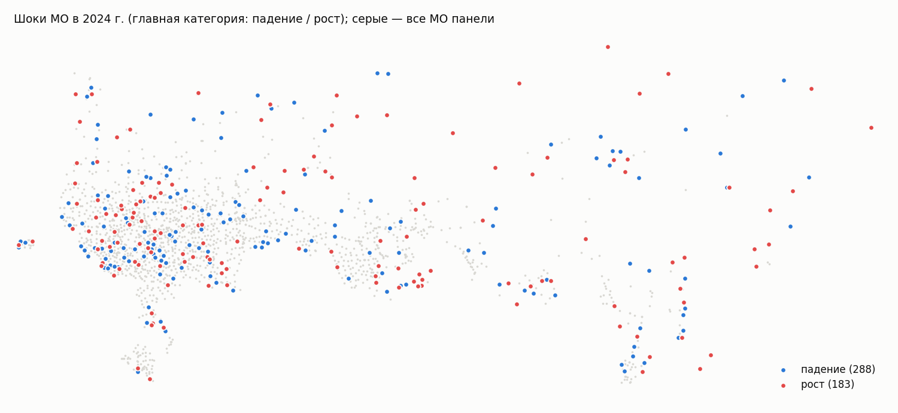

Хакатон СберИндекса · данные по МО · 2 октября 2026
Прогноз потребления в МО и раннее обнаружение шоков: методология и результаты
Сводка для команды: как мы ставим задачу, что пробовали, какой подход оставили и какие числа он даёт. Подробности по каждому шагу — в results/NIGHT_REPORT.md и отчётах, на которые он ссылается; интерактивная версия с картой шоков — results/night_dashboard.html.
Кратко
Задача. По помесячным безналичным расходам на жителя в 2016 муниципальных образованиях (6 категорий трат, январь 2023 — декабрь 2024) прогнозировать расходы на 1, 3, 6 и 12 месяцев вперёд и находить шоки — месяцы, когда расходы МО резко разошлись с ожидаемыми.
Итоговая модель final — это правило выбора из двух моделей CatBoost; каждая — одна модель на все 2016 МО категории, прогноз на месяц вперёд, на дальние месяцы — рекурсивно:
«Все категории» и «Продовольствие» — catboost_logdiff_dsp_g123: цель — прирост расходов в логарифмах; ряд перед обучением очищается сезонным профилем, оценённым по самой панели МО; кроме признаков ряда — регион, тип МО, координаты, динамика МО своего региона и пяти ближайших соседей, население.
Здоровье, Маркетплейсы, Общепит, Транспорт — catboost_diff: цель — прирост в рублях, без сезонной поправки и без внешних признаков, только признаки самого ряда.
Какой из двух вариантов взять для категории, решается по одному 2023 году — по тому, насколько сезонность у МО категории одинакова (раздел 3.2). MAE к прогнозу «как в прошлом месяце» (naive), среднее по категориям:
$tiles
Шоки. Детектор сравнивает факт с прогнозом final на месяц вперёд, нормирует отклонение на обычную волатильность МО, отделяет сдвиг всего региона и оценивает вектор отклонений по шести категориям. В 2024 г. — $n шоков МО, $reg региональных и $grad «постепенных» сдвигов. На искусственных шоках детектор находит падение на 10% в 29–75% случаев, на 20% — в 51–99% (при 1% ложных тревог). Isolation Forest проверен и проиграл простым оценкам.
Главный методический вывод: выбор модели «под ячейку» по тесту переобучается. Одна модель, выбранная по обучающим данным, стабильно лучше, чем лучшая модель для каждой пары «категория × горизонт», подобранная по половине тестового года или по прошлым ошибкам среди ~90 вариантов.
1. Данные
consumption.parquet — средние безналичные расходы на жителя МО в месяц, руб., 6 категорий («Все категории», Продовольствие, Здоровье, Маркетплейсы, Общественное питание, Транспорт), 303 126 строк, 2190 МО. В основных экспериментах — 2016 МО с полными рядами; 174 неполных (все МО Дагестана, Чечни, Ингушетии) проверялись отдельно и не помогают полным. Восьми регионов (Краснодарский край, Ростовская, Белгородская, Брянская, Воронежская, Курская области, Крым, Севастополь) в данных нет.
market_access.parquet (индекс доступности рынков) и connection.parquet (расстояния между МО по дорогам) — статические признаки и соседи.
Внешние данные (src/external.py): справочник МО СберИндекса (регион, тип, статус, координаты), население и квартальная статистика МО из БДПМО Росстата, национальный ряд расходов СберИндекса с 2018 г. (для сезонного профиля), помесячные ИПЦ и зарплаты по регионам (Росстат, ЕМИСС). Новостной корпус CC-News (3,9 млн статей 2023–2024) — для объяснения шоков.
2. Как оцениваем
Протокол: расширяющееся окно, обучение минимум 12 месяцев (весь 2023 г.). Для горизонта h точки старта — 12, 12 + h, …; при любом h тестом оказывается весь 2024 г. Прогноз из одной точки строится сразу для всех МО.
Метрика — MAE в рублях на жителя; основная сводка — MAE к naive, % (среднее по 6 категориям).
Защита от подгонки под тест. На 2024 г. проверено около 90 вариантов моделей, поэтому средняя MAE по году — слабый довод. Каждое изменение проверяется ещё и числом побед по точкам старта, выбором по первой половине 2024 г. с проверкой на второй и онлайн-выбором по уже известным ошибкам.
Шум. Одна и та же модель с разными seed даёт размах MAE 1,6–3% (основная модель с профилем по панели) и до 12–20% (CatBoost без сезонной поправки, особенно с внешними признаками). Различия меньше 3–5% улучшением не считаем.
3. Прогноз
3.1. Какие модели сравнивали
Все модели прогнозируют из одной точки сразу все МО категории и проверяются по одному протоколу. Таблица — MAE к naive, % (среднее по 6 категориям; отрицательное — лучше naive). Полный список вариантов — в configs/forecast.yaml, все метрики — в results/metrics_overall.csv.
$t_models
Простые правила — ориентир. «Как год назад × рост» хорош на 1 месяц для агрегированных категорий (сезонный рисунок у МО одинаковый), но на 12 месяцев систематически занижает: годовой рост из одного года не оценить.
ETS, Theta, ARIMA строятся по ряду каждого МО отдельно, без сезонности (12–23 точки — мало для сезонной модели). Почти не отличаются от naive; ARIMA ещё и медленная.
Prophet тоже строится по ряду каждого МО. По умолчанию при истории меньше двух лет он отключает годовую сезонность и по сути продлевает тренд — в среднем на уровне naive. С принудительной годовой сезонностью он переобучается на единственный декабрьский пик 2023 г. и тянет его вперёд — худший вариант на длинных горизонтах (+107% к naive на 12 мес.). Главная причина проигрыша — Prophet не видит других МО: у каждого ряда 12–23 точки, а общая для страны сезонность и динамика соседей ему недоступны. final лучше Prophet по умолчанию в 23 из 24 пар «категория × горизонт» (в 24-й — Маркетплейсы на 12 мес. — наравне), в среднем на 40% на 1 мес. и на 26% на 12 мес.:
$t_prophet
MAE final / Prophet по умолчанию, руб. на жителя; в скобках — разница.
Chronos-2 (предобученная модель для рядов, без обучения на наших данных; в том числе с национальным рядом как ковариатой и совместно по МО) — на 1–6 месяцев на уровне naive (−5…0%), хуже лучших моделей во всех ячейках и на 12 мес. уходит на +18…+22%. Выключена: прогон на CPU около 35 минут.
Глобальные модели — одна модель на все МО категории на общих признаках. Она учится на десятках тысяч пар «прошлое → следующий месяц» и видит, как ведут себя похожие МО, — поэтому выигрывает у моделей по одному ряду. Ridge нестабилен при рекурсии (без ограничений прогноз маркетплейсов «разгонялся» до ×40), CatBoost — стабильно лучший, с ним и шла дальнейшая работа.
3.2. Из чего состоит final
catboost_logdiff_dsp_g123
catboost_diff
Категории
Все категории, Продовольствие
Здоровье, Маркетплейсы, Общественное питание, Транспорт
Алгоритм
CatBoost (градиентный бустинг), одна модель на все 2016 МО категории; 500 деревьев глубины 6, learning_rate 0,05, функция потерь RMSE
Что прогнозирует
прирост за месяц в логарифмах: log yt − log yt−1
прирост за месяц в рублях: yt − yt−1
Сезонность
ряд делится на сезонный профиль по панели, модель прогнозирует очищенный ряд, профиль возвращается
без поправки; сезонность — через признак месяца и приросты год назад
Внешние признаки
справочник МО, регион и соседи, население
нет
Обучение
все пары «МО × месяц», первая цель — февраль 2023 г.
все пары «МО × месяц», первая цель — март 2023 г.
Прогноз на h месяцев
рекурсивно: прогноз на месяц вперёд подставляется как факт и становится входом для следующего месяца; прогноз прироста ограничен 0,5% и 99,5% квантилями обучающей цели
Признаки самого ряда (у обеих моделей), для прогноза месяца t по данным до t−1:
приросты за 1, 2 и 3 последних месяца — в логарифмах и в рублях; последний уровень (в рублях и логарифме);
отклонение последнего значения от среднего за 3 и 6 месяцев; волатильность месячных приростов за 6 месяцев;
месяц года (категориальный); прирост того же месяца год назад; разрыв «год назад − последнее значение»; рост год к году;
общий для всех МО прирост за прошлый месяц и год назад (медиана по МО) — общий для страны фактор;
средний уровень расходов МО; индекс доступности рынков.
Внешние признаки (только у catboost_logdiff_dsp_g123):
справочник МО СберИндекса: регион, тип МО (городской округ, район, муниципальный округ, внутригородская территория), административный центр, ЗАТО, координаты центра;
регион и соседи: медианный прирост МО своего региона за прошлый месяц, год назад и год к году; средний прирост пяти ближайших МО по автодороге;
население: численность за 2022 г. (БДПМО Росстата) и её прирост.
Сезонный профиль по панели. Для каждого месяца года — медиана по всем МО прироста «прошлый месяц → этот месяц» по данным обучения, минус средний месячный тренд; для месяцев, которых в обучении ещё нет (январь, пока обучение — только 2023 г.), берётся национальный профиль расходов СберИндекса 2019–2022 гг. Профиль пересчитывается в каждой точке старта, будущее не используется.
Правило выбора. По первым 12 месяцам для категории считается R² общего месяца — доля дисперсии месячных приростов МО, объяснённая медианным приростом месяца. Если ≥ 0,5 (сезонность у МО почти одинакова) — catboost_logdiff_dsp_g123, иначе — catboost_diff. По 2023 г.: Все категории 0,76, Продовольствие 0,83; Здоровье 0,37, Маркетплейсы 0,41, Общепит 0,28, Транспорт 0,29.
Варианты для работы.final_online3 — те же две модели, но для каждой категории берётся та, что точнее прогнозировала последние три месяца (на 1 месяц вперёд: Маркетплейсы −9%, Общепит −4%, Транспорт −3% MAE к final). Прогноз на 2025 г. выбирает модель по ошибкам всего 2024 г.
3.3. Как пришли к final: сезонность и январь
Как менялся CatBoost шаг за шагом, MAE к naive, %:
$t_evo
Обучения в первом прогнозе — один год. Из одного года нельзя отделить годовой рост от сезонности, а перехода «декабрь → январь» модель не видит вовсе. Отсюда три решения:
Сезонный профиль. Национальный профиль 2019–2022 гг. подходит к данным СберИндекса плохо: в феврале в очищенном ряду остаётся +6…+10%. Профиль по самой панели дал Продовольствию −20…−33% MAE, «Все категориям» −13…−27%.
Февраль в обучении. Первой целью обучения был март, поэтому февральский скачок модель не видела никогда. Сдвиг первой цели на февраль — исправление: −3…−18% MAE во всех категориях, ровно на стартах, чей прогноз проходит через февраль.
Правило выбора. Для Здоровья и Общепита профиль вредит: январь в обучение не попадает, а все национальные профили обещают новогодний провал на 18–25 п.п. глубже реального. По 2023 г. этого не предсказать, поэтому правило выбирает подход по однородности сезонности (раздел 3.2): где у МО своя сезонность, общий профиль только мешает.
3.4. Результаты
MAE к naive, % (среднее по категориям). Горизонтальная черта — лучшая модель в каждой ячейке, выбранная по тому же тесту: верхняя граница, недостижимая на практике.
$t_appr
«Лучшая базовая модель» — лучшая для каждой пары «категория × горизонт» среди моделей до сезонной поправки и внешних данных, выбранная прямо по тесту, то есть ориентир в её пользу. final выигрывает у неё на всех горизонтах и забирает 70–90% выигрыша недостижимого оракула (у оракула $o1 на 1 мес., $o12 на 12 мес.).
По категориям, MAE final / лучшей базовой модели, руб. на жителя (в скобках — разница):
$t_cat
Где правило ошибается. Транспорту сезонная поправка помогает (−10…−25% MAE), но по данным 2023 г. он неотличим от Общепита, которому она вредит. Подбирать признак по тесту на шести категориях — подгонка, поэтому правило оставлено как есть. Маркетплейсы на 12 мес. хуже базы на 20%: там лучшим было простое среднее за 3 месяца, выбранное по тесту.
3.5. Выбор модели: что работает, а что нет
Выбор «лучшей в ячейке» по первой половине 2024 г. на второй половине даёт −24…−28% к naive против −42% у одной модели с профилем. Первая половина — особый период (январь без опыта января), она отбирает модели, устойчивые к короткой истории.
Онлайн-выбор по прошлым ошибкам среди ~90 моделей: −13…−18% против −23% у одной модели — «лучшая по прошлому» среди почти одинаковых вариантов выбирается почти случайно.
Что работает — выбор из двух кандидатов правила по ошибкам трёх последних месяцев (final_online3): на прогнозе на 1 мес. Маркетплейсы 477 → 435 руб. (−9%), Общепит 70 → 67 (−4%), Транспорт 95 → 92 (−3%). Это правило для ежемесячной работы; на горизонтах от 3 мес. выбор по трём месяцам неустойчив.
Проверка по прогнозам II полугодия 2023 г. выбрала бы профиль для всех категорий и ошиблась бы для Здоровья и Общепита — в июле–декабре нет января. Правило по R² этот риск видит, такая проверка — нет.
3.6. Что проверено и не взято
Идея
Итог
Региональные ИПЦ и зарплаты (Росстат, ЕМИСС) как признаки
Только «Все категории» на h ≥ 3: −4…−15%; остальным вредит (Маркетплейсы до +46%)
Поправка тренда роста по зарплатам региона
Связь держится на одном старте, на других знак меняется
Прямой прогноз (одна модель на все шаги вперёд)
Маркетплейсы и Общепит на h = 3/6: −5…−21%; на h = 12 хуже рекурсии везде
Признаки «МО относительно региона»
−8…+8%, в основном хуже
Глубина 4, l2 = 10, 1000 итераций; функция потерь MAE; веса по уровню МО
В пределах шума, без устойчивой стороны
Ансамбли, среднее нескольких seed, сжатие прогноза к региону
±1–5%
Новостные признаки (всплески статей о ЧС и отключениях)
+0,7…+1,4% MAE
Обучение на неполных МО; Chronos-2; Prophet с годовой сезонностью
Не помогают
Квадраты и логарифмы признаков не проверялись: деревья нечувствительны к монотонным преобразованиям, а логарифмические формы признаков уже есть.
3.7. Прогноз на 2025 год
Модели обучены на всех 24 месяцах; модель для категории и шага — та из двух кандидатов, что точнее прогнозировала 2024 г. на тот же горизонт (отличие от правила — Транспорт и первый месяц Маркетплейсов). По каждому МО — прогноз и 90%-интервал (results/forecast_2025/). Медиана по МО: «Все категории» −25% в январе к декабрю 2024 и +12,5% к декабрю 2025; Маркетплейсы +28% к декабрю; Общепит — летний пик +33…+35%.
Типичный МО (медиана по 2016 МО), руб. на жителя в месяц: факт 2023–2024, прогноз на 2025 г. (пунктир) и медиана границ 90%-интервалов МО.
4. Шоки
4.1. Определение и детектор
Шок — месяц, когда расходы МО разошлись с ожидаемыми сильнее, чем обычно расходятся у этого МО. Ожидание — прогноз final на месяц вперёд по данным строго до этого месяца, поэтому сигнал появляется в тот же месяц, когда приходят данные. Шаги (src/shocks_v2.py):
Отклонение d = log(факт / прогноз) по 6 категориям, робастно стандартизованное внутри (категория, месяц, группа размера МО) и делённое на собственную волатильность МО по прошлым месяцам. Медиана по месяцу убирает общий для страны промах прогноза.
Разложение: медиана по МО региона — региональная часть, остаток — местная. Сдвиг всего региона даёт один региональный шок, а не десятки «шоков МО».
Адаптивная нормировка: местное отклонение делится ещё и на разброс прошлых местных отклонений того же МО — у хронически нестабильных МО тревога не повторяется каждый месяц.
Оценка по вектору из 6 отклонений — combo: максимум процентилей двух оценок (среднеквадратичное по трём худшим категориям и робастное расстояние Махаланобиса). Шок — верхний 1% МО-месяцев 2024 г., «внимание» — следующие 2%.
Флаг «постепенный»: та же оценка по сумме отклонений за два месяца подряд ловит медленные сдвиги, которые в каждом месяце по отдельности тонут в шуме.
Тип через месяц — какая доля отклонения осталась: сдвиг уровня, разовый, нарастающий, провал с отскоком.
4.2. Проверка на искусственных шоках
Размеченных шоков нет, поэтому детектор проверяется вставкой: в 400 случайных МО-месяцев 2024 г. добавляется шок заданной формы и величины, порог ставится так, чтобы на остальных МО-месяцах было 1% тревог, и считается доля найденных вставок, %.
$t_cal
Isolation Forest не лучше ни в одном сценарии. Махаланобис сильнее на смене структуры трат (продукты вверх, остальное вниз), topk — на общем падении; combo близка к лучшей в каждом сценарии.
Шоки 5% от шума неотличимы. Шок всего региона −10% региональная оценка находит в 100% случаев; без разложения он превратился бы в тревоги у ~66% МО региона.
Окно из двух месяцев находит постепенный шок «2 × −5%» в 48% случаев против 28% у оценки за месяц, но резкий −10% — в 38% против 78%; поэтому оно выдаётся отдельным флагом.
Где детектор слеп — у МО с низкими расходами на жителя (там выше шум), доля найденных, %; ложных тревог во всех квинтилях около 1%:
$t_rb
4.3. Результаты за 2024 год
$n шоков МО (у $mo МО), $watch — «внимание», $grad — «постепенные»; $reg региональных шоков, $reg_jan из них — январь 2024 в Алтае, Тыве, Камчатке, Якутии: там новогодний провал −29…−41% против −24% по стране, и февральский отскок 2023 г. тоже сильнее — своя сезонность региона, которую модель без января в обучении знать не могла (помечены отдельно). У $mo2 МО два и больше шоков за год, у $mo3 — три и больше: для них шок скорее режим, чем событие.
Во II полугодии 2023 г. (прогнозы с обучением 6–11 месяцев) отмечено ещё $n23 шоков с тем же порогом — там больше лишних тревог, строки помечены.
$t_types
Большинство местных шоков сохраняются: в топе — падения общепита на 40–65% в районах (похоже на закрытие заведений).

Шоки МО в 2024 г. по координатам центров МО: падение и рост главной категории; серые — все МО панели.
4.4. Подтверждения
Торопец, сентябрь 2024 — атака беспилотников на арсенал (~80 статей): маркетплейсы −23%, транспорт +22%.
Долинский район Сахалина, январь 2024 — циклон, лавинная опасность, перебои автомобильного сообщения: транспорт −26%, общепит −36%, здоровье −30%.
Оба найдены только по тратам. Остальные крупнейшие шоки новостями не объясняются; в среднем у шоков всплеск новостей о ЧС и отключениях встречается вдвое чаще (5,7% против 3,0%).
Паводок в Орске: апрель — 96-й процентиль, на границе «внимания» (продукты +7%, маркетплейсы −3%, здоровье −3,5% — структура ЧС, но слабая); май — шок (отскок: маркетплейсы +15%, общепит +17%).
Росстат (квартальный оборот крупных и средних организаций, г/г к медиане региона): общепит у МО с шоком вниз −3,4 п.п., вверх +1,4 п.п.; «Все категории» вверх +4,2 п.п. Направление совпадает, выборки — 8–22 МО-квартала.
Детектор ловит и артефакты данных (общепит +9600%, маркетплейсы +1054% на нулевой базе) — полезно для очистки, но это не экономические шоки.
5. Интервалы: как шок связан с прогнозом
После шока прогноз на следующий месяц не смещён (знак ошибки совпадает с шоком в 54% случаев), но ошибка вдвое больше обычной. 90%-интервал строится по квантилям остатков final отдельно для категории, горизонта и квинтиля волатильности МО (оценены на январе–июне 2024 г., проверены на июле–декабре); если в последнем известном месяце у МО был шок, интервал шире в 1,3 раза:
$t_iv
На 12 мес. покрытие ниже цели: квантили взяты по шагам 1–6 единственного старта, проверка — по шагам 7–12.
6. Открытые вопросы
Транспорт: сезонная поправка ему нужна, но по данным 2023 г. этого не видно. С двумя годами истории выбор по прошлым ошибкам уже выбирает её (так сделан прогноз на 2025 г.).
Горизонт 12 месяцев оценён по одному старту без января в обучении — непредставительно. В реальной работе с 24 месяцами истории профиль по панели знает январь.
Бедные и удалённые МО: ошибка прогноза в 2–4 раза выше, детектор вдвое слабее. Сжатие к региону не помогло — похоже на неустранимый шум при текущих данных.
Причины шоков: новостями объясняются единицы. Следующий кандидат — просроченная задолженность по зарплате по регионам (Росстат, помесячно с 2019 г.).
7. Как воспроизвести
Команда (.venv/bin/python -m …)
Что делает
src.external
внешние данные → data/external/
src.run_forecast, src.evaluate
модели из configs/forecast.yaml → results/forecasts/, метрики